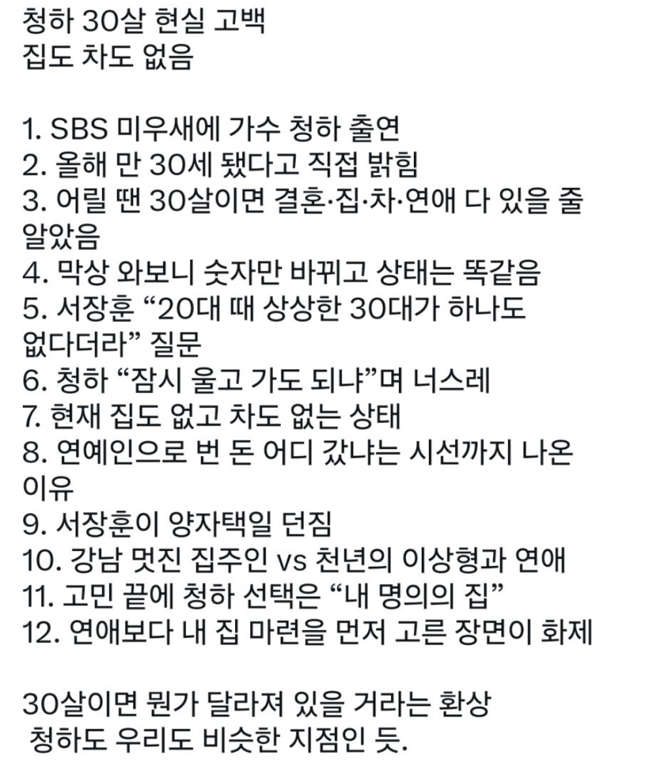

https://cafe.daum.net/rocksoccer/ADs1/1559701?svc=cafeapi

https://cafe.daum.net/rocksoccer/ADs1/1559701?svc=cafeapi

1. 청하 독립운동가 자손임.
2. 청하 단콘을 아직도 못했음.
가수는 단콘 못하면 돈 벌기 쉽지 않음... 행사에서 번 돈으로 신곡 내고 다시 행사 나가고 반복이다.
독립운동가여도 이렇게 기만하면 국물도 없을줄 아시오
도둑맞는 가난
저 짤에 글쓴 애는 미취업 20대 중반쯤됐을듯
비슷은 ㅋㅋ
비슷같은 소리하네 ㅋㅋㅋㅋㅋㅋㅋㅋㅋㅋㅋㅋㅋㅋㅋㅋㅋㅋㅋㅋㅋㅋㅋㅋㅋㅋㅋㅋㅋㅋㅋㅋㅋㅋㅋ
ㄹㅇㅋㅋ 저런 애자같은 사족만 안달았어도
다들 잊지말라고 연예인 걱정은 하는거 아냐 ㅋ
청하 정도면 어디 행사 1시간만 뛰어도 2~3천이야
근거는?
근거라기보다 일단 티비에 나오는 연예인 걱정은 안하는게 맞긴함;;
안나오는 연예인들이 진짜 생활고지
연예인 행사가격 이미 다 공개되있는데 비슷한급 보면 답나오지
"지피티"
내 명의의 집 = 한강 뷰 50억 오버 이런거겠지 ㅋㅋ
청하 히트곡 상당히 많지 않나?
찾아듣지 않아도 자연스레 들려오는 노래가 청하 노래였는데
생각해보니 빚이 많아서 그때 갚고 이제 벌때 라고 한다면
최근엔 청하노래를 들어본 적 없는거 같기도...
걍 한때라도 유명해지기만 했으면 여기저기 행사다니면서 돈 쓸어담음
청하가 생각하는 집과 서민의 집은 같은게 아니자나
청하가 돈이없는기준은 일반인과 다르겠지만
집안어려운거 일으켜세운다고 모은돈이 적긴할걸
걸그룹 출신 유투버가 그러드라
“ 끼 있다고 유명한 애들 백명중 한명이 연습생 되고 그 연습생 백중 하나가 데뷔해서 그중 백중 하나가 소위 뜬다고..” 뜨면 그때부터 회사랑 정산한다고 작사작곡료 연습실 숙소비용 머리부터 의상 매니저 월급 회사 경비까지 계약에 따라 부담한다그러드라
구라 치다 걸리면 나중에 어떻게 되는지 알지?
ioi하면서 꽤 많이 벌었을탠데 진짜 없다고?... 대학축제도 엄청많이 돌아다니더만
더샾 그거 자기집 아니었나
ㅈㄹ 2년 뒤에 억대 건물/집 현금 구입 기사뜬다
...? 왠 기만질이여
연예인의 집도 돈도 없다는 말은 일반인이 상상하는 그런건 아닐거 같음
아직 현금 100억 못모았다는거 아님?
자꾸
상장해서 몇백억 번 친구도 걍 전세 살긴 함ㅋㅋ
그건 세금땜에 그러는거 아님??
적당히 경기권 8억내외 살꺼면 걍 샀겠지ㅋㅋ 연예인들은 비용처리 빡쌔게 하려고 있는 집도 없애고 월세 사는 경우도 있음 목표가 모으면 풀현금으로 살 듯
자가와 자차가 필요없는 삶을 살고 계신 것
연예인의 방송드립을 그대로믿는다고? 연예인걱정은하는게아니야 ㅋ티비에나오고 어느정도만유명해도 먹고살고 집사는데지장없고 일반인이랑은 비교불가임ㅋ
연예인 걱정은 하는게 아님
본인 차,집이 없음.
부모님 빚 다 갚음, 부모님 집 사드림, 백댄서들에게 다이아 반지와 고가 백 선물 돌림, 기부로 2억 이상 냈음.
전 회사인 MNH에서도 꽤 잘 해줬다. 일을 좆같이 해서 그렇지. 복지는 좋은데 일이 좆같은 회사 느낌이었음. 그래도 정산은 다 받았음. 일반인이랑 같은 라인이 아니다.
oh when i get old ~~
이 노래도 좋지 크리스토퍼 듀엣~
행사 많이 뛰던데 정산 못 받았나?
내 나이 33 집도 차도 있다
원한다면 강남으로 이사도 갈수있다
청혼하러가면 가능할까?
이름아는 연예인은 걱정할필요가읎다던 옛날 글 생각난다
청하 너무 좋음
연예인이 돈없다는건 수십억이 없다는 말이지
고등어아저씨 오늘도 당신이 이겼습니다
쟤 맘만 먹으면 하루에 니들 연봉 땡긴다ㅋㅋ
ㅋㅋㅋ 립서비스좀한다고 진짜 같은줄아네
노래를 고음부분에서만 어떻게 그렇게 계속머물면서 부를수가 있을까? 그렇다고 질리지도 않고 시원한느낌
곡들도 전부 명곡들이고
월세 얼마짜리 사는지 봐야지
지랄도 지랄염병읗하네
자기명의차 아니고 법인리스차에
러드매니져가 운전해줄거고
자기명의집 없고 법인명의주택이거나
비용처리용도로 월세 250 이런데
살겟지